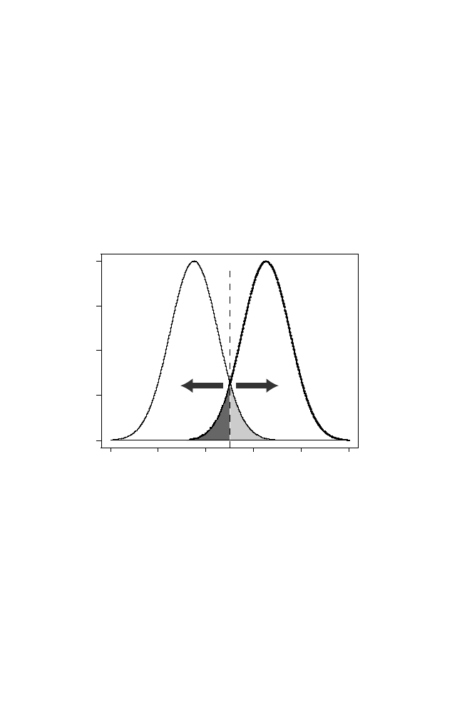

9.6 Using Scores for Classification
253
Given a training set of sites, scoring produces a distribution of scores for
these sites, shown as an idealized distribution, A, in Fig. 9.7. Given a set
of sequences that are not sites, the same scoring method produces another
distribution, B, that in general overlaps the first one. We can place a
cutoff
score
C
on the graph and classify any sequence with score
S
≥
C
as a site and
classify any sequence having
S < C
as a nonsite. The area of distribution A to
the left of
C
represents the fraction of false negative assignments, and the area
of distribution B to the right of
C
is the fraction of false positive assignments.
We may move the cutoff lower in an effort to avoid “losing” actual sites, but
we do so at the expense of a greater number of false-positive assignments. We
can move the cutoff to the right to reduce the false-positive assignments, but
then we lose sensitivity.
0
2
4
6
8
10
0.0
0.1
0.2
0.3
0.4
Score S
Cutoff
A
B
Fig. 9.7.
Idealized illustration of the classification of objects of types A and B
based upon their score distributions. An arbitrary cutoff score midway between the
maximum scores for the two object types is indicated. Objects B having scores larger
than the cutoff score (light shaded area) are incorrectly classified as A, while objects
A having scores below the cutoff score (dark shaded area) are incorrectly classified
as B. If objects are classified to answer the question of whether they are objects
of type A, then the light shaded area corresponds to false positive assignments
and the dark shaded area corresponds to false negative assignments. The cutoff
score can be adjusted up or down (arrows) to minimize false positive assignments
(with correspondingly greater false negative errors) or to minimize false negative
assignments (with correspondingly greater false positive errors).